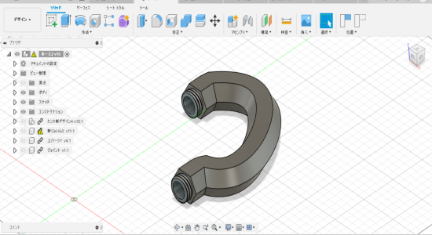
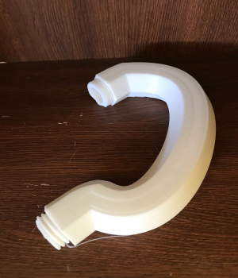
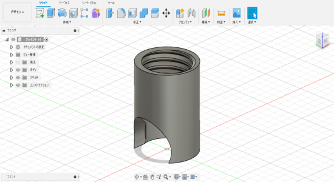

全体的な構成は試作品9と変えずに、パイプを六角形にし、底面を平らにすることで印刷しやすくした。まずはデザインよりも機能面で動くかを重視する。
印刷自体は基本的にはうまくできたが、自分のプリンターの調子が悪いのでところどころほつれている個所がある。しかし、前回よりはきれいにでき、ねじの部分もうまくいった。渡邉君の家ではきれいに印刷できたようなので問題なさそう。大きさの変更によってランプ部分も多少変更した。
また、プランター部分との接続するためのジョイントを作った。側面に穴が開いていることでホースや配線が問通りやすくなっている。
一つ一つのパーツが印刷に8時間以上かかるのですべて印刷して組み立てるのに時間がかかってしまう。